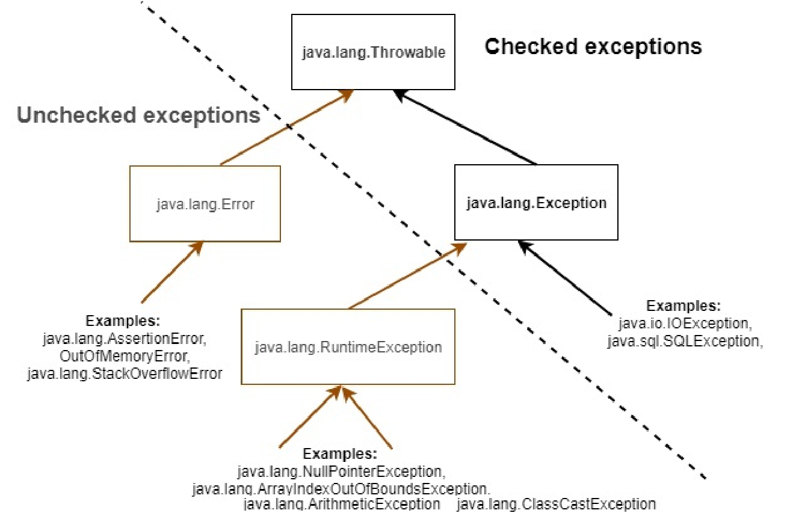

Lưu ý rằng Java có một cấu trúc phân cấp Lớp (Class) Exception (Ngoại lệ) bám rễ rất sâu, có nghĩa là có nhiều Lớp (Class), Lớp con (Subclass), và các Lớp con (Subclass) của Lớp con (Subclass) trong cây Exception (Ngoại lệ). Vì vậy, chỉ vì một Exception (Ngoại lệ) là một RuntimeException, không có nghĩa là Exception (Ngoại lệ) đó kế thừa trực tiếp từ RuntimeException. Nó thậm chí có thể là lớp cháu của RuntimeException. Ví dụ, ArrayIndexOutOfBoundsException thực tế kế thừa từ IndexOutOfBoundsException, lớp mà lần lượt kế thừa từ RuntimeException. Tương tự như vậy, chỉ vì một Exception (Ngoại lệ) là một Ngoại lệ checked (Checked Exception) không có nghĩa là nó kế thừa trực tiếp từ Exception. Nó có thể kế thừa từ bất kỳ Lớp con (Subclass) nào của Exception (tất nhiên ngoại trừ RuntimeException).
Lý do đằng sau Ngoại lệ checked (Checked Exception) và Ngoại lệ unchecked (Unchecked Exception)
Hãy nhớ lại cuộc thảo luận của chúng ta về các tình huống ngoại lệ nơi tôi đã nói về hai loại tình huống ngoại lệ - những tình huống mà lập trình viên biết trước và những tình huống mà lập trình viên hoàn toàn không mong đợi xảy ra. Trong khi lập trình viên có thể muốn cung cấp một hướng xử lý thay thế